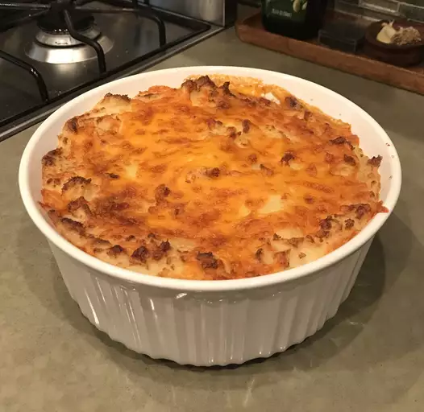

Vegan Shepards Pie

When you want your meal shaped like dessert
Ingredients
Mashed potato layer:
- 5 russet potatoes, peeled and cut into 1-inch cubes
- ½ cup vegan mayonnaise
- ½ cup soy milk
- ¼ cup olive oil
- 3 tablespoons vegan cream cheese substitute (such as Tofutti ®)
- 2 teaspoons salt
Bottom layer:
- 1 tablespoon vegetable oil
- 1 large yellow onion, chopped
- 2 carrots, chopped
- 3 stalks celery, chopped
- ½ cup frozen peas
- 1 tomato, chopped
- 1 teaspoon Italian seasoning
- 1 clove garlic, minced, or more to taste
- 1 pinch ground black pepper to taste
- 1 (14 ounce) package vegetarian ground beef substitute
- ½ cup shredded Cheddar-style soy cheese
Instructions
- Place the potatoes in a pot, cover with cold water, and bring to a boil over medium-high heat. Turn the heat to medium-low, and boil the potatoes until tender, about 25 minutes; drain.
- Stir the vegan mayonnaise, soy milk, olive oil, vegan cream cheese, and salt into the potatoes, and mash with a potato masher until smooth and fluffy. Set the potatoes aside.
- Preheat oven to 400 degrees F (200 degrees C), and spray a 2-quart baking dish with cooking spray.
- Heat the vegetable oil in a large skillet over medium heat, and cook and stir the onion, carrots, celery, frozen peas, and tomato until softened, about 10 minutes. Stir in the Italian seasoning, garlic, and pepper.
- Reduce the heat to medium-low, and crumble the vegetarian ground beef substitute into the skillet with the vegetables. Cook and stir, breaking up the meat substitute, until the mixture is hot, about 5 minutes.
- Spread the vegetarian meat substitute mixture into the bottom of the baking dish, and top with the mashed potatoes, smoothing them into an even layer. Sprinkle the potatoes with the shredded soy cheese.
- Bake in the preheated oven until the cheese is melted and slightly browned and the casserole is hot, about 20 minutes.